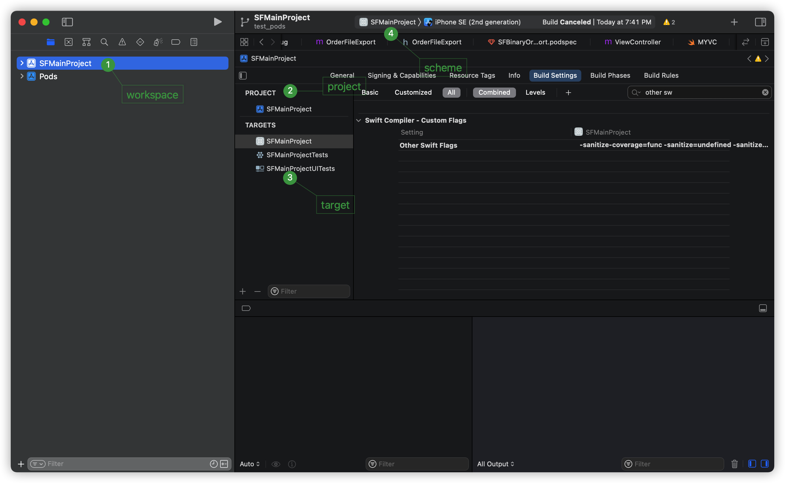
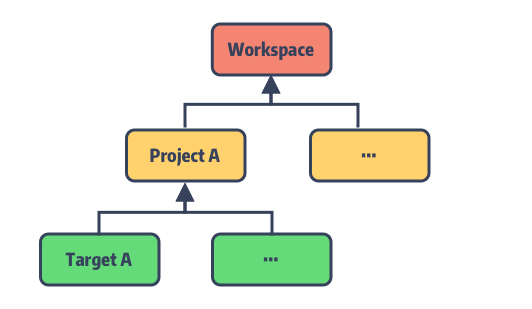
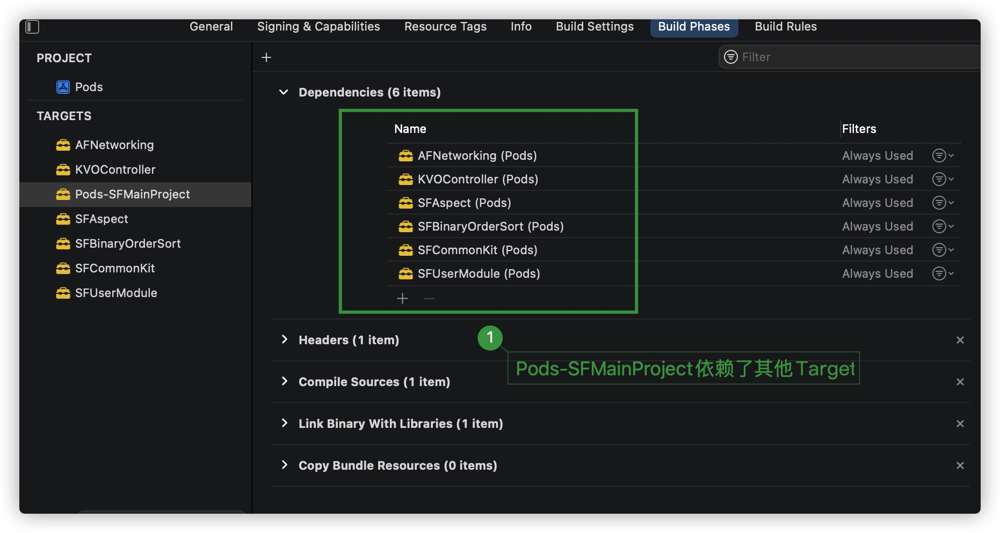

<!DOCTYPE html>
<html lang="en">
<head>
  <meta charset="UTF-8">
<meta name="viewport" content="width=device-width, initial-scale=1, maximum-scale=2">
<meta name="theme-color" content="#222">
<meta name="generator" content="Hexo 6.0.0">
  <link rel="apple-touch-icon" sizes="180x180" href="/images/apple-touch-icon-next.png">
  <link rel="icon" type="image/png" sizes="32x32" href="/images/favicon-32x32-next.png">
  <link rel="icon" type="image/png" sizes="16x16" href="/images/favicon-16x16-next.png">
  <link rel="mask-icon" href="/images/logo.svg" color="#222">

<link rel="stylesheet" href="/css/main.css">


<link rel="stylesheet" href="/lib/font-awesome/css/all.min.css">

<script id="hexo-configurations">
    var NexT = window.NexT || {};
    var CONFIG = {"hostname":"samstring.github.io.git","root":"/","scheme":"Pisces","version":"7.8.0","exturl":false,"sidebar":{"position":"left","display":"post","padding":18,"offset":12,"onmobile":false},"copycode":{"enable":false,"show_result":false,"style":null},"back2top":{"enable":true,"sidebar":false,"scrollpercent":false},"bookmark":{"enable":false,"color":"#222","save":"auto"},"fancybox":false,"mediumzoom":false,"lazyload":false,"pangu":false,"comments":{"style":"tabs","active":null,"storage":true,"lazyload":false,"nav":null},"algolia":{"hits":{"per_page":10},"labels":{"input_placeholder":"Search for Posts","hits_empty":"We didn't find any results for the search: ${query}","hits_stats":"${hits} results found in ${time} ms"}},"localsearch":{"enable":false,"trigger":"auto","top_n_per_article":1,"unescape":false,"preload":false},"motion":{"enable":true,"async":false,"transition":{"post_block":"fadeIn","post_header":"slideDownIn","post_body":"slideDownIn","coll_header":"slideLeftIn","sidebar":"slideUpIn"}}};
  </script>

  <meta name="description" content="前言本文从补充网上的二进制重排方案开始，探讨Xcode工程目录和CocoaPods到底做了什么。 一、问题抖音之前发表了一个利用二进制重排的方案去优化启动速度。然后这两年关于二进制重排的文章已经有很多了。 其核心是记录在启动时刻获取调用了哪些文件的哪些方法，然后将这些方法按顺序放在‘.order’文件中，系统在加载时根据这些内容优先加载，以减少page fault次数，提高启动速度。 很多文章中">
<meta property="og:type" content="article">
<meta property="og:title" content="是时候理解Xcode工程与CocoaPods了">
<meta property="og:url" content="https://samstring.github.io.git/2022/01/09/iOS/2/ios2/index.html">
<meta property="og:site_name" content="samstring">
<meta property="og:description" content="前言本文从补充网上的二进制重排方案开始，探讨Xcode工程目录和CocoaPods到底做了什么。 一、问题抖音之前发表了一个利用二进制重排的方案去优化启动速度。然后这两年关于二进制重排的文章已经有很多了。 其核心是记录在启动时刻获取调用了哪些文件的哪些方法，然后将这些方法按顺序放在‘.order’文件中，系统在加载时根据这些内容优先加载，以减少page fault次数，提高启动速度。 很多文章中">
<meta property="og:locale" content="en_US">
<meta property="og:image" content="https://samstring.github.io.git/2022/01/09/iOS/2/ios2/2.png">
<meta property="og:image" content="https://samstring.github.io.git/2022/01/09/iOS/2/ios2/iShot2022-01-08%2022.22.17.png">
<meta property="og:image" content="https://samstring.github.io.git/2022/01/09/iOS/2/ios2/iShot2022-01-08%2023.55.40.png">
<meta property="og:image" content="https://samstring.github.io.git/2022/01/09/iOS/2/ios2/iShot2022-01-09%2001.03.26.png">
<meta property="og:image" content="https://samstring.github.io.git/2022/01/09/iOS/2/ios2/iShot2022-01-08%2023.42.59.png">
<meta property="og:image" content="https://samstring.github.io.git/2022/01/09/iOS/2/ios2/iShot2022-01-09%2000.27.17.png">
<meta property="og:image" content="https://samstring.github.io.git/2022/01/09/iOS/2/ios2/relation.jpeg">
<meta property="og:image" content="https://samstring.github.io.git/2022/01/09/iOS/2/ios2/iShot2022-01-09%2001.10.28.png">
<meta property="og:image" content="https://samstring.github.io.git/2022/01/09/iOS/2/ios2/iShot2022-01-09%2001.15.23.png">
<meta property="og:image" content="https://samstring.github.io.git/2022/01/09/iOS/2/ios2/iShot2022-01-09%2001.39.30.png">
<meta property="og:image" content="https://samstring.github.io.git/2022/01/09/iOS/2/ios2/iShot2022-01-09%2014.18.42.png">
<meta property="og:image" content="https://samstring.github.io.git/2022/01/09/iOS/2/ios2/iShot2022-01-09%2014.37.59.png">
<meta property="og:image" content="https://samstring.github.io.git/2022/01/09/iOS/2/ios2/16417104383902.jpg">
<meta property="og:image" content="https://samstring.github.io.git/2022/01/09/iOS/2/ios2/iShot2022-01-09%2014.51.21.png">
<meta property="og:image" content="https://samstring.github.io.git/2022/01/09/iOS/2/ios2/iShot2022-01-09%2020.29.31.png">
<meta property="og:image" content="https://samstring.github.io.git/2022/01/09/iOS/2/ios2/iShot2022-01-09%2021.19.52.png">
<meta property="article:published_time" content="2022-01-09T07:17:01.000Z">
<meta property="article:modified_time" content="2022-01-09T13:28:37.020Z">
<meta property="article:author" content="samstring">
<meta name="twitter:card" content="summary">
<meta name="twitter:image" content="https://samstring.github.io.git/2022/01/09/iOS/2/ios2/2.png">

<link rel="canonical" href="https://samstring.github.io.git/2022/01/09/iOS/2/ios2/">


<script id="page-configurations">
  // https://hexo.io/docs/variables.html
  CONFIG.page = {
    sidebar: "",
    isHome : false,
    isPost : true,
    lang   : 'en'
  };
</script>

  <title>是时候理解Xcode工程与CocoaPods了 | samstring</title>
  


  <noscript>
  <style>
  .use-motion .brand,
  .use-motion .menu-item,
  .sidebar-inner,
  .use-motion .post-block,
  .use-motion .pagination,
  .use-motion .comments,
  .use-motion .post-header,
  .use-motion .post-body,
  .use-motion .collection-header { opacity: initial; }

  .use-motion .site-title,
  .use-motion .site-subtitle {
    opacity: initial;
    top: initial;
  }

  .use-motion .logo-line-before i { left: initial; }
  .use-motion .logo-line-after i { right: initial; }
  </style>
</noscript>

</head>

<body itemscope itemtype="http://schema.org/WebPage">
  <div class="container use-motion">
    <div class="headband"></div>

    <header class="header" itemscope itemtype="http://schema.org/WPHeader">
      <div class="header-inner"><div class="site-brand-container">
  <div class="site-nav-toggle">
    <div class="toggle" aria-label="Toggle navigation bar">
      <span class="toggle-line toggle-line-first"></span>
      <span class="toggle-line toggle-line-middle"></span>
      <span class="toggle-line toggle-line-last"></span>
    </div>
  </div>

  <div class="site-meta">

    <a href="/" class="brand" rel="start">
      <span class="logo-line-before"><i></i></span>
      <h1 class="site-title">samstring</h1>
      <span class="logo-line-after"><i></i></span>
    </a>
      <p class="site-subtitle" itemprop="description">一个平平无奇的程序猿</p>
  </div>

  <div class="site-nav-right">
    <div class="toggle popup-trigger">
    </div>
  </div>
</div>


<nav class="site-nav">
  <ul id="menu" class="main-menu menu">
        <li class="menu-item menu-item-主页">

    <a href="/" rel="section"><i class="fa fa-home fa-fw"></i>主页</a>

  </li>
        <li class="menu-item menu-item-分类">

    <a href="/categories/" rel="section"><i class="fa fa-th fa-fw"></i>分类</a>

  </li>
        <li class="menu-item menu-item-归档">

    <a href="/archives/" rel="section"><i class="fa fa-archive fa-fw"></i>归档</a>

  </li>
  </ul>
</nav>


</div>
    </header>

    
  <div class="back-to-top">
    <i class="fa fa-arrow-up"></i>
    <span>0%</span>
  </div>


    <main class="main">
      <div class="main-inner">
        <div class="content-wrap">
          

          <div class="content post posts-expand">
            

    
  
  
  <article itemscope itemtype="http://schema.org/Article" class="post-block" lang="en">
    <link itemprop="mainEntityOfPage" href="https://samstring.github.io.git/2022/01/09/iOS/2/ios2/">

    <span hidden itemprop="author" itemscope itemtype="http://schema.org/Person">
      <meta itemprop="image" content="https://p9-passport.byteacctimg.com/img/user-avatar/b02abbd29495eadaaf476f3b5cb129bf~300x300.image">
      <meta itemprop="name" content="samstring">
      <meta itemprop="description" content="问号青年">
    </span>

    <span hidden itemprop="publisher" itemscope itemtype="http://schema.org/Organization">
      <meta itemprop="name" content="samstring">
    </span>
      <header class="post-header">
        <h1 class="post-title" itemprop="name headline">
          是时候理解Xcode工程与CocoaPods了
        </h1>

        <div class="post-meta">
            <span class="post-meta-item">
              <span class="post-meta-item-icon">
                <i class="far fa-calendar"></i>
              </span>
              <span class="post-meta-item-text">Posted on</span>
              

              <time title="Created: 2022-01-09 15:17:01 / Modified: 21:28:37" itemprop="dateCreated datePublished" datetime="2022-01-09T15:17:01+08:00">2022-01-09</time>
            </span>
            <span class="post-meta-item">
              <span class="post-meta-item-icon">
                <i class="far fa-folder"></i>
              </span>
              <span class="post-meta-item-text">In</span>
                <span itemprop="about" itemscope itemtype="http://schema.org/Thing">
                  <a href="/categories/iOS/" itemprop="url" rel="index"><span itemprop="name">iOS</span></a>
                </span>
            </span>

          

        </div>
      </header>

    
    
    
    <div class="post-body" itemprop="articleBody">

      
        <h2 id="前言"><a href="#前言" class="headerlink" title="前言"></a>前言</h2><p>本文从补充网上的二进制重排方案开始，探讨Xcode工程目录和CocoaPods到底做了什么。</p>
<h2 id="一、问题"><a href="#一、问题" class="headerlink" title="一、问题"></a>一、问题</h2><p>抖音之前发表了一个利用二进制重排的方案去优化启动速度。然后这两年关于二进制重排的文章已经有很多了。</p>
<p>其核心是记录在启动时刻获取调用了哪些文件的哪些方法，然后将这些方法按顺序放在‘.order’文件中，系统在加载时根据这些内容优先加载，以减少page fault次数，提高启动速度。</p>
<p><br>很多文章中的方案都是基于Clang插桩的方式去实现。以下以一篇我认为很好的文章 <a target="_blank" rel="noopener" href="https://juejin.cn/post/6844904130406793224#heading-36">启动优化之Clang插桩实现二进制重排</a> 一文为例</p>
<p>文中步骤如下</p>
<ol>
<li>打开工程，修改项目配置，增加-fsanitize-coverage=func,trace-pc-guard这个Other C Flags</li>
<li>添加__sanitizer_cov_trace_pc_guard函数。这个函数会hook方法，在每一个方法调用前都会调用。</li>
<li>在__sanitizer_cov_trace_pc_guard记录调用的方法，并存入数组</li>
<li>将数组里面的方法按顺序写入到’.order’文件中</li>
</ol>
<p>但文中只提及到了在主工程中插桩，这样的话只能记录主工程中的方法调用顺序。对于我们通过CocoaPods引入的库的方法是记录不到的。</p>
<p>下面我们将详细分析Xcode工程和CocoaPods，来完善这个通过Clang插桩实现二进制重排的方案。</p>
<hr>
<span id="more"></span>
<h2 id="二、Xcode工程"><a href="#二、Xcode工程" class="headerlink" title="二、Xcode工程"></a>二、Xcode工程</h2><h3 id="常规Xcode工程结构"><a href="#常规Xcode工程结构" class="headerlink" title="常规Xcode工程结构"></a>常规Xcode工程结构</h3><p>首先看一下常规的Xcode工程，如下<br><br>可以看到标记的地方图中标记了四个地方，分别是WorkSpace、Project、Target和Scheme。</p>
<p>以下分别一一讲述</p>
<h3 id="Target"><a href="#Target" class="headerlink" title="Target"></a>Target</h3><p>Product是产出物，产出物可以是Application,Extension,Test,Framework,Libary等。<br>Target是一个产出一个Product的最小编译单元,每一个Target对应着一个Product。</p>
<p>其关系如下图所示</p>
<p></p>
<h4 id="配置"><a href="#配置" class="headerlink" title="配置"></a>配置</h4><p>对于每一个Target，都有自己的独立配置，如上图中绿框所示，分别是</p>
<ol>
<li>General：配置基础的信息，如Product的名字，bundle ID等信息。</li>
<li>Signing &amp; Capailities：签名，能力(如推送能力)配置</li>
<li>Resource Tags:按需加载资源配置</li>
<li>Info：info文件配置，如权限配置等</li>
<li>Build Settings：配置Target，如指定使用的编译器，目标平台、编译参数、头文件搜索路径等</li>
<li>Build Phases：build阶段配置，如前置依赖、执行的脚本文件</li>
<li>Build Rules：配置自定义构建规则</li>
</ol>
<p>要新建一个Target也很容易，在菜单栏点击File-&gt; New -&gt;Target即可，就会弹出要新建什么类型的Target，创建成功后，可以在Products文件夹中看到对应的Product。<br></p>
<h4 id="依赖"><a href="#依赖" class="headerlink" title="依赖"></a>依赖</h4><p>一个Target是可以依赖其他Target的。如果Target A依赖与Target B，那么<br>会先处理Target B,生成B的Product，再去生成A的Product.拿CocoaPods举例子。当我们执行pod install后，可以看到<br><br>主工程中的Target依赖了Pod工程的framework产物。主工程的中的Target SFMainPrject会依赖Pod工程的Target Pods-SFMainProject。这时候在构建过程中会先把Target Pods-SFMainProject编译成一个framework，再去构建App。</p>
<h3 id="Project"><a href="#Project" class="headerlink" title="Project"></a>Project</h3><p>Target是最小的编译单元，Project是Target的载体。也是Xcode可以直接打开的工程结构。<br>Project是无法直接被编译的，也无法输出Product。我们开发过程中编译的是Target。所以对于一个Project而言,至少包含一个Target。<br>Project还可以包含其他的Project<br></p>
<p>如上图可以看出，一个Project可以包含多个Target。其中一个Project还有Build Settings等配置。如果Target中的Build Settings有相同的配置，则Target中的配置会继承或覆盖Project的配置</p>
<h3 id="WorkSpace"><a href="#WorkSpace" class="headerlink" title="WorkSpace"></a>WorkSpace</h3><p>WorkSpace就是Project容器。一个WorkSpace可以装载多个Project。当我们打开一个WorkSpace的时候，WorkSpace中的Project是相互可见的。<br>对xxx.xcworkspace文件单击右键，显示包内容,如下。<br></p>
<p>可以看出，WorkSpace只是简单的把Project组织起来。Target,Project,Workspace关系如下<br></p>
<h3 id="Scheme"><a href="#Scheme" class="headerlink" title="Scheme"></a>Scheme</h3><p>Scheme是一个理解为一个构建流程。定义了构建的Target，构建配置，以及测试配置。每一次构建，只能选择一个Scheme。点击下图位置即可配置和新建Scheme.<br><br>每一个Scheme都会对应一个Target。指明Target的各个构建流程的配置是怎样的，包括了Build、Run、Test、Profile、Analyze、Archive等操作每一个过程都可以单独配置。如下<br></p>
<h3 id="Build-Settings"><a href="#Build-Settings" class="headerlink" title="Build Settings"></a>Build Settings</h3><p>在说了Target,Project以后，Build Settings就不得不说了。Build Setting是一个构建变量，指定了Target在构建中的信息。如指定Xcode传给编译器的变量。<br>除了上面在Project,Target中的Build Settings，我们也可以去自定义一个Build Settings。在Xcode工程中点击</p>
<figure class="highlight plaintext"><table><tr><td class="gutter"><pre><span class="line">1</span><br></pre></td><td class="code"><pre><span class="line">File-&gt; New -&gt; File -&gt; Configuration Settings File</span><br></pre></td></tr></table></figure>
<p>在弹出的窗口中，指定配置文件Config.xcconfig的所分配的project和Target,存放的位置，点击【crate】即可在工程中看到对应的配置文件。<br><br>然后Xcode工程在构建过程中，会按以下的顺序读取配置</p>
<ol>
<li>.xcconfig文件中的配置</li>
<li>Target的Build Settings</li>
<li>Project的Build Settings</li>
<li>平台的默认值</li>
</ol>
<hr>
<h2 id="三、CocoaPods"><a href="#三、CocoaPods" class="headerlink" title="三、CocoaPods"></a>三、CocoaPods</h2><h3 id="CocoaPods与Xcode工程"><a href="#CocoaPods与Xcode工程" class="headerlink" title="CocoaPods与Xcode工程"></a>CocoaPods与Xcode工程</h3><p>在我们平常开发中,我们调用’pod init’以后就会生成一个Podfile文件。然后填入依赖的库，调用‘pod install’就会生成一个WorkSpace和一个Pods文件夹，Pods文件夹里面有一个名为Pods的Project<br><br>打开WorkSpace,可以看到如下</p>
<p></p>
<p> 通过pod引入的库会被当作一个Target，每个Target的产物是framework。而在Pods-SFMainProject中的Target中，有依赖于其他几个Target。如下<br> <br>结合在【Target】-【依赖】小节中主工程的Target依赖于Pods-SFMainProject这个Target的产物Pods-SFMainProject.framwork，可以得知Target与Target之间的关系,如下<br></p>
<p>在主Target构建前，会把依赖的各个Target先构建，在Target再依赖其他的Target产出的framework去构建。</p>
<h3 id="CocoaPods"><a href="#CocoaPods" class="headerlink" title="CocoaPods"></a>CocoaPods</h3><p>上面说到，调用pod install后会生成Pods文件夹和WorkSpace,到底是怎么做的呢？</p>
<h3 id="CocoaPods是什么"><a href="#CocoaPods是什么" class="headerlink" title="CocoaPods是什么"></a>CocoaPods是什么</h3><h4 id="Ruby和"><a href="#Ruby和" class="headerlink" title="Ruby和"></a>Ruby和</h4><p>CocoaPods其实是一个基于Ruby实现的库管理工具。先介绍一下Ruby常用的开发环境。</p>
<ul>
<li>Ruby：一种开发语言，类似于JAVA,Python等</li>
<li>RVM：用于帮你安装Ruby环境，帮你管理多个Ruby环境，帮你管理你开发的每个Ruby应用使用机器上哪个Ruby环境</li>
<li>RubyGems是一个Ruby程序包管理器。它将一个Ruby应用程序打包到一个gem里，作为一个安装单元。</li>
<li>Gem：是封装起来的Ruby应用程序或代码库。</li>
<li>Gemfile：定义你的应用依赖哪些第三方包，bundle根据该配置去寻找这些包。</li>
<li>Bundler：是管理 Gem 依赖的工具。在配置文件Gemfile里说明你的应用依赖哪些第三方包，他自动帮你下载安装多个包，并且会下载这些包依赖的包</li>
</ul>
<p>大致关系如下<br></p>
<p>对于CocoaPods，其实也是一个Gem。所以我们可以通过添加一个Gemfile文件为项目指定CocoaPods版本。</p>
<p>CocoaPods也借鉴了这种模式。设计如下<br></p>
<h4 id="CocoaPods架构"><a href="#CocoaPods架构" class="headerlink" title="CocoaPods架构"></a>CocoaPods架构</h4><p>更新中</p>
<h2 id="四、完善二进制重排"><a href="#四、完善二进制重排" class="headerlink" title="四、完善二进制重排"></a>四、完善二进制重排</h2><p>更新中</p>
<h2 id="参考"><a href="#参考" class="headerlink" title="参考"></a>参考</h2><p><a target="_blank" rel="noopener" href="https://developer.apple.com/library/archive/featuredarticles/XcodeConcepts/Concept-Targets.html#//apple_ref/doc/uid/TP40009328-CH4-SW1">https://developer.apple.com/library/archive/featuredarticles/XcodeConcepts/Concept-Targets.html#//apple_ref/doc/uid/TP40009328-CH4-SW1</a></p>
<p><a target="_blank" rel="noopener" href="https://blog.csdn.net/u011114264/article/details/52487236">https://blog.csdn.net/u011114264/article/details/52487236</a></p>

    </div>

    
    
    

      <footer class="post-footer">

        


        
    <div class="post-nav">
      <div class="post-nav-item">
    <a href="/2022/01/08/Flutter/3/flutter3/" rel="prev" title="Flutter源码阅读(3)-Flutter的布局与hitTest">
      <i class="fa fa-chevron-left"></i> Flutter源码阅读(3)-Flutter的布局与hitTest
    </a></div>
      <div class="post-nav-item">
    <a href="/8888/01/01/index/" rel="next" title="概览">
      概览 <i class="fa fa-chevron-right"></i>
    </a></div>
    </div>
      </footer>
    
  </article>
  
  
  


          </div>
          

<script>
  window.addEventListener('tabs:register', () => {
    let { activeClass } = CONFIG.comments;
    if (CONFIG.comments.storage) {
      activeClass = localStorage.getItem('comments_active') || activeClass;
    }
    if (activeClass) {
      let activeTab = document.querySelector(`a[href="#comment-${activeClass}"]`);
      if (activeTab) {
        activeTab.click();
      }
    }
  });
  if (CONFIG.comments.storage) {
    window.addEventListener('tabs:click', event => {
      if (!event.target.matches('.tabs-comment .tab-content .tab-pane')) return;
      let commentClass = event.target.classList[1];
      localStorage.setItem('comments_active', commentClass);
    });
  }
</script>

        </div>
          
  
  <div class="toggle sidebar-toggle">
    <span class="toggle-line toggle-line-first"></span>
    <span class="toggle-line toggle-line-middle"></span>
    <span class="toggle-line toggle-line-last"></span>
  </div>

  <aside class="sidebar">
    <div class="sidebar-inner">

      <ul class="sidebar-nav motion-element">
        <li class="sidebar-nav-toc">
          Table of Contents
        </li>
        <li class="sidebar-nav-overview">
          Overview
        </li>
      </ul>

      <!--noindex-->
      <div class="post-toc-wrap sidebar-panel">
          <div class="post-toc motion-element"><ol class="nav"><li class="nav-item nav-level-2"><a class="nav-link" href="#%E5%89%8D%E8%A8%80"><span class="nav-number">1.</span> <span class="nav-text">前言</span></a></li><li class="nav-item nav-level-2"><a class="nav-link" href="#%E4%B8%80%E3%80%81%E9%97%AE%E9%A2%98"><span class="nav-number">2.</span> <span class="nav-text">一、问题</span></a></li><li class="nav-item nav-level-2"><a class="nav-link" href="#%E4%BA%8C%E3%80%81Xcode%E5%B7%A5%E7%A8%8B"><span class="nav-number">3.</span> <span class="nav-text">二、Xcode工程</span></a><ol class="nav-child"><li class="nav-item nav-level-3"><a class="nav-link" href="#%E5%B8%B8%E8%A7%84Xcode%E5%B7%A5%E7%A8%8B%E7%BB%93%E6%9E%84"><span class="nav-number">3.1.</span> <span class="nav-text">常规Xcode工程结构</span></a></li><li class="nav-item nav-level-3"><a class="nav-link" href="#Target"><span class="nav-number">3.2.</span> <span class="nav-text">Target</span></a><ol class="nav-child"><li class="nav-item nav-level-4"><a class="nav-link" href="#%E9%85%8D%E7%BD%AE"><span class="nav-number">3.2.1.</span> <span class="nav-text">配置</span></a></li><li class="nav-item nav-level-4"><a class="nav-link" href="#%E4%BE%9D%E8%B5%96"><span class="nav-number">3.2.2.</span> <span class="nav-text">依赖</span></a></li></ol></li><li class="nav-item nav-level-3"><a class="nav-link" href="#Project"><span class="nav-number">3.3.</span> <span class="nav-text">Project</span></a></li><li class="nav-item nav-level-3"><a class="nav-link" href="#WorkSpace"><span class="nav-number">3.4.</span> <span class="nav-text">WorkSpace</span></a></li><li class="nav-item nav-level-3"><a class="nav-link" href="#Scheme"><span class="nav-number">3.5.</span> <span class="nav-text">Scheme</span></a></li><li class="nav-item nav-level-3"><a class="nav-link" href="#Build-Settings"><span class="nav-number">3.6.</span> <span class="nav-text">Build Settings</span></a></li></ol></li><li class="nav-item nav-level-2"><a class="nav-link" href="#%E4%B8%89%E3%80%81CocoaPods"><span class="nav-number">4.</span> <span class="nav-text">三、CocoaPods</span></a><ol class="nav-child"><li class="nav-item nav-level-3"><a class="nav-link" href="#CocoaPods%E4%B8%8EXcode%E5%B7%A5%E7%A8%8B"><span class="nav-number">4.1.</span> <span class="nav-text">CocoaPods与Xcode工程</span></a></li><li class="nav-item nav-level-3"><a class="nav-link" href="#CocoaPods"><span class="nav-number">4.2.</span> <span class="nav-text">CocoaPods</span></a></li><li class="nav-item nav-level-3"><a class="nav-link" href="#CocoaPods%E6%98%AF%E4%BB%80%E4%B9%88"><span class="nav-number">4.3.</span> <span class="nav-text">CocoaPods是什么</span></a><ol class="nav-child"><li class="nav-item nav-level-4"><a class="nav-link" href="#Ruby%E5%92%8C"><span class="nav-number">4.3.1.</span> <span class="nav-text">Ruby和</span></a></li><li class="nav-item nav-level-4"><a class="nav-link" href="#CocoaPods%E6%9E%B6%E6%9E%84"><span class="nav-number">4.3.2.</span> <span class="nav-text">CocoaPods架构</span></a></li></ol></li></ol></li><li class="nav-item nav-level-2"><a class="nav-link" href="#%E5%9B%9B%E3%80%81%E5%AE%8C%E5%96%84%E4%BA%8C%E8%BF%9B%E5%88%B6%E9%87%8D%E6%8E%92"><span class="nav-number">5.</span> <span class="nav-text">四、完善二进制重排</span></a></li><li class="nav-item nav-level-2"><a class="nav-link" href="#%E5%8F%82%E8%80%83"><span class="nav-number">6.</span> <span class="nav-text">参考</span></a></li></ol></div>
      </div>
      <!--/noindex-->

      <div class="site-overview-wrap sidebar-panel">
        <div class="site-author motion-element" itemprop="author" itemscope itemtype="http://schema.org/Person">
    
  <p class="site-author-name" itemprop="name">samstring</p>
  <div class="site-description" itemprop="description">问号青年</div>
</div>
<div class="site-state-wrap motion-element">
  <nav class="site-state">
      <div class="site-state-item site-state-posts">
          <a href="/archives">
          <span class="site-state-item-count">6</span>
          <span class="site-state-item-name">posts</span>
        </a>
      </div>
      <div class="site-state-item site-state-categories">
            <a href="/categories/">
        <span class="site-state-item-count">2</span>
        <span class="site-state-item-name">categories</span></a>
      </div>
  </nav>
</div>


  <div class="links-of-blogroll motion-element">
    <div class="links-of-blogroll-title"><i class="fa fa-link fa-fw"></i>
      Links
    </div>
    <ul class="links-of-blogroll-list">
        <li class="links-of-blogroll-item">
          <a href="https://juejin.cn/user/3957854362672798" title="https:&#x2F;&#x2F;juejin.cn&#x2F;user&#x2F;3957854362672798" rel="noopener" target="_blank">掘金</a>
        </li>
    </ul>
  </div>

      </div>

    </div>
  </aside>
  <div id="sidebar-dimmer"></div>


      </div>
    </main>

    <footer class="footer">
      <div class="footer-inner">
        

        

<div class="copyright">
  
  &copy; 
  <span itemprop="copyrightYear">2022</span>
  <span class="with-love">
    <i class="fa fa-heart"></i>
  </span>
  <span class="author" itemprop="copyrightHolder">samstring</span>
</div>

        


      </div>
    </footer>
  </div>

  
  <script src="/lib/anime.min.js"></script>
  <script src="/lib/velocity/velocity.min.js"></script>
  <script src="/lib/velocity/velocity.ui.min.js"></script>

<script src="/js/utils.js"></script>

<script src="/js/motion.js"></script>


<script src="/js/schemes/pisces.js"></script>


<script src="/js/next-boot.js"></script>


  


  

  

</body>
</html>
